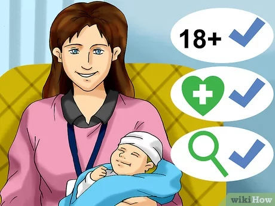

Deija Robins
An aspring nurse midwife and business entrepreneur
I am currently a 4th-year student at the University of California, Riverside finishing a bachelor's degree in Neuroscience. I will proceed to complete prerequisites for a Master's in Nursing. While being a student at UCR, I worked at many different jobs to understand the ways of business. These jobs ranged from fast food to tutor to warehouse associate. In all of my years of offering good customer service, I have realized you have to be patient with the people that you are giving the service to ensure that they have a good experience enough to come back to buy what is being offered. These are essential skills needed to build an excellent business. There are different avenues I want to explore with businesses. Starting small, options to explore for me would be to start off with candles. I want to understand and build the skills needed to become a business owner, and I believe starting small is the right way to go. Some of the things I have done over the course of my jobs are mainly providing great customer service. At Wetzel’s, I worked as a cashier, and with that, I had to welcome the customer, and take their order. This also included upsale of different products that would pair well with others, especially with pretzels. The items that were offered were dips and drinks if the customer was not already ordering that. The same thing goes for Gen KBBQ. As a hostess, I have to make the customers feel welcomed and assure them that tables were being prepared for the parties to be sat as quickly as possible. With Nordstrom, this experience gave me more intel on how businesses work on a larger scale. When mass producing and mass selling products, there is a lot of organization that comes into play. There are daily goals that have to be met by every single worker to ensure that the business is running smoothly and safely. It is these bits of information that will help me with running my business in the future along with completing my degree in Neuroscience.
I like to surround myself with positive people working towards a goal. Building those relationships can help me construct a network of people that will make the transition from college to the real-world easier. I will also gain more opportunities to further myself, and grow mentally. I am task-oriented and a quick learner. I have also volunteered over 300 hours of my time at my local library and at a medical center, which included me having to interact with the customers and patients there and help them out with anything. After completing the prerequisites for nursing, I will apply to different programs that will lead me to finish the certification to work as a nurse. My passion for learning about the human body drove me to want to become a nurse, more specifically a nurse midwife because I want to contribute to society by bringing new life into the world by aiding in their birth. Birth means new beginnings, and I consider college one of my new beginnings that will help lead me to my goals.
Experience
Volunteer NICU Baby Cuddler
• Held NICU babies when in distress
• Supervised the front desk and answered phones
• Relayed messages to the attending physician
Warehouse Associate
• Expanded capabilities by working in different departments
• Inspected state of products for customer satisfaction
Hostess
• Responsible for placing guests on the waitlist
• Answered phones to assist with customer questions
• Fulfilled online orders to satisfy the guest’s needs quickly
• Assisted the servers in setting up their tables
Education
UC Riverside
Portfolio
